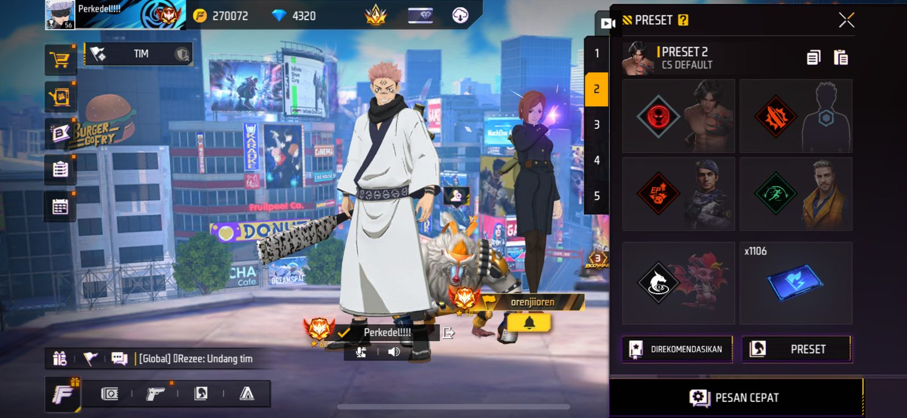
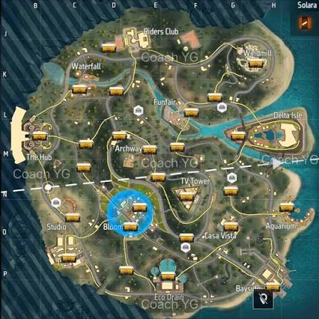

Free Fire
One of the biggest live games in Indonesia. I ran operations on it.
Free Fire is Garena’s battle royale. I worked on the Indonesian game. I did not make the game.
From 2024 to 2026 I was Product Associate, Game Operation. The first job was the machine around the release. Weekly QA on the asset pipeline took three days. It came down to one. Human errors on that pipeline fell by about 65 percent. Notion and a set of bots did the publishing.
Beside that: interviews and data on the new-player experience, a tips bot for new players, and anti-cheat monitoring for the Indonesian community.
Later the work sat closer to the game. Research on features, mechanics, and how people played, then time with the team on modes, updates, and new features. The specifics stay inside Garena. The number I can put on a page is the pipeline.
Product & Operations Associate, Garena Indonesia. I left for the Apple Developer Academy in Bali in 2026.
Notes
- Role
- Product Associate, Game Operation
- Where
- Garena, Free Fire Indonesia
- Years
- 2024–2026
- Pipeline
- Weekly asset QA, 3 days down to 1 day
- Errors
- About 65% fewer human errors on that pipeline
- Also
- Publishing bots, new-player research, a newbie tips bot, anti-cheat monitoring
2024–2026

